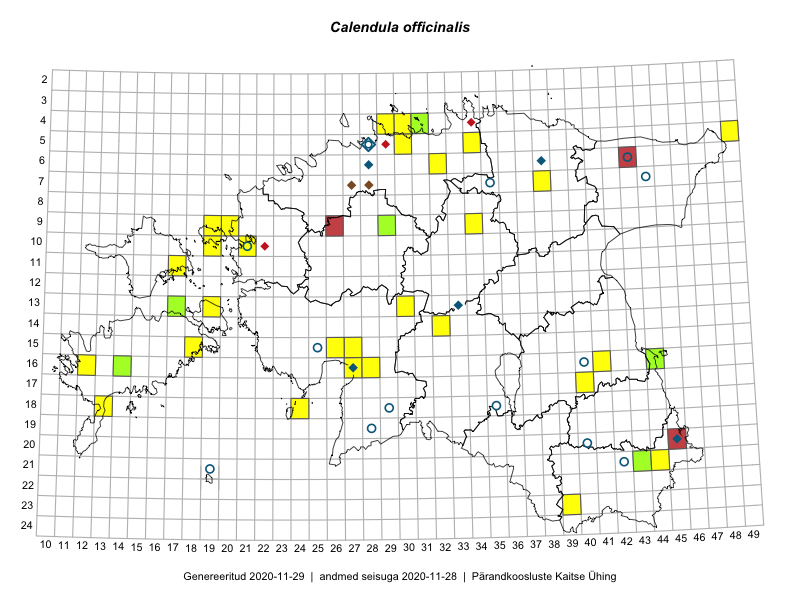

Calendula officinalis
Uuendatud: 2016-12-02
Kaardile koondatud taksonid: Calendula officinalis L.

Kaart põhineb 28 vaatlusel. Taksonit on leitud 18 ruudust.
Kuvatud viited 20 esimesele andmebaasikirjele, ülejäänud PlutoFis
- Peedu Saar, Eerik Leibak: 2015-07-30: 16-41: GPS punkt
- Tiit Hallikma, Toomas Kukk: 2015-07-22: 05-49: GPS punkt
- Peedu Saar, Eerik Leibak: 2015-07-30: 16-41: ala
- Ott Luuk, Peedu Saar: 2015-09-04: 05-30: GPS punkt
- Toomas Kukk, Eerik Leibak: 2015-07-29: 16-44: ala
- Toomas Kukk, Eerik Leibak: 2015-07-29: 16-44: GPS punkt
- Kadri Tali: 2015-06-03: 13-19: ala
- Oliver Parrest: 2015-07-15: 18-13: GPS punkt
- Eerik Leibak: 2016-06-25: 06-32: ala
- Ott Luuk, Eerik Leibak: 2016-07-25: 09-34: ala
- Ott Luuk, Eerik Leibak: 2016-07-25: 09-34: GPS punkt
- Liina Oja, Eerik Leibak: 2016-07-28: 07-38: ala
- Sander Laherand, Eerik Leibak: 2016-07-29: 04-30: ala
- Sander Laherand, Eerik Leibak: 2016-07-29: 04-30: GPS punkt
- Liina Oja, Eerik Leibak: 2016-07-28: 07-38: GPS punkt
- Karin Kikas, Peedu Saar: 2016-08-18: 21-44: GPS punkt
- Karin Kikas, Peedu Saar: 2016-08-18: 21-44: GPS punkt
- Sander Laherand, Tõnu Ploompuu, Nele Jõessar: 2016-07-25: 04-29: ala
- Indrek Tammekänd: 2016-08-27: 16-27: GPS punkt
- Mari Reitalu, Hannes Pehlak: 2016-08-26: 15-18: ala